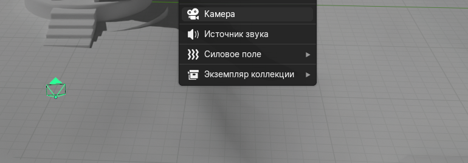

Референс с обложки курса — башня у воды; кадр должен показывать и водную гладь, и архитектуру.
Шаги на сегодня
- Добавьте камеру:
Shift + A→ Камера (скрин 444). - В аутлайнере выберите объект Camera (чтобы команда ниже знала, какую камеру двигать).
- Орбитой мыши настройте свободный вид в 3D-вьюпорте: так, как хотите видеть картинку в итоге — башня, вода, горизонт.
- Встаньте в нужный вид и нажмите
Ctrl + Alt + Numpad 0(ноль на цифровом блоке): активная камера встанет в текущий вид — позиция и угол совпадут с тем, что вы настроили глазами. - Проверка:
Numpad 0— посмотреть сцену глазами камеры. Если нет NumPad: менюВид → Выравнять вид → Активную камеру по видудля шага с выравниванием (или назначьте сочетание в настройках ввода). - При необходимости чуть подвиньте камеру в виде
Numpad 0и снова применитеCtrl + Alt + Numpad 0, пока кадр не устроит. - Правило третей: сместите башню от центра кадра, оставьте баланс неба и воды.
- В свойствах камеры задайте фокусное расстояние 35–50 мм (эквивалент). Размытие фона (
Depth of Field) по желанию. Output Properties→ разрешение, например1920 × 1080.- Сохраните
lesson06_camera.blend.
Скрин: добавление камеры

Shift + A → Камера; в сцене виден значок камеры с пирамидой обзора.Горячие клавиши этого дня
Shift + A— добавить камеру.Ctrl + Alt + Numpad 0— активная камера = текущий вид.Numpad 0— переключиться на вид из камеры.